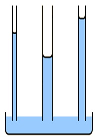

1) Place the following substances in order of increasing vapor pressure at a given temperature. SF6 SiH4 SF4
A) SF4 < SF6 < SiH4*
B) SF6 < SF4 < SiH4
C) SF6 < SiH4 < SF4
D) SiH4 < SF4 < SF6
SF4 is see saw shaped, so it is polar and has the lowest vapor pressure. SF6 is octahedral and SiH4 is tetrahedral, which are symmetrical shapes, so they are non-polar. However SF6 is much larger, thus will have more London dispersion forces, and a lower vapor pressure.
2) Which substance has the highest intermolecular forces?
A) Xe*
B) Ar
C) Ne
D) Kr
Xe has the highest intermolecular forces because it is the largest atom (with the highest London dispersion forces).
3) Which of the following 3 alkane isomers would you expect to have the highest boiling point?
A) Pentane*
B) Isopentane
C) Since they are isomers, they will have the same boiling point.
D) Neopentane
Pentane is the least branched alkane, so it will have the most surface area interacting for London dispersion forces. Thus it will have the highest intermolecular forces and the highest boiling point.
4) Place the following substances in order of increasing boiling point. H2O N2 CO
A) CO < N2 < H2O
B) N2 < CO < H2O*
C) H2O < CO < N2
D) CO < H2O < N2
N2 only has London dispersion forces, so it has the lowest boiling point. CO is polar, so it has dipole-dipole forces H2O can hydrogen bond, so it will have the highest boiling point.
5) Which of the following has the lowest viscosity?
A) IF5
B) Br2*
C) CH3CH2CH2OH
D) H2O
Br2 has the lowest viscosity, because it has the lowest intermolecular forces (only London dispersion forces). H2O and CH3CH2CH2OH can hydrogen bond. IF5 has dipole-dipole forces because it is an asymmetrical shape (square pyramidal).
6) Determine the normal boiling point (at 760 mm Hg) of a substance whose vapor pressure is 54.1 mm Hg at 57.0°C and has a ΔHvap of 28.0 kJ/mol.
A) 331 K
B) 262 K
C) 446 K*
D) 59.7 K
To determine the normal boiling point of a substance, we need to find the temperature at which its vapor pressure is equal to the atmospheric pressure at 760 mm Hg.
Given: T1: 57.0°C T2: ? P1: 54.1 mm Hg P2 = 760 mm Hg (normal pressure) ΔHvap = 28.0 kJ/mol R = gas constant (8.3145 J/mol·K)
To calculate the normal boiling point, we can use the Clausius-Clapeyron equation:
ln(P2/P1) = -(ΔHvap/R) * (1/T2 - 1/T1)
Converting the given values to K and J: T1: 57.0°C + 273.15 = 330. K ΔHvap = 28.0 kJ/mol = 28.0 × 1000J/1 kJ = 2.80x104 J/mol
Simplifying: ln(14.0) = -3370 K * (1/T2 - 1/330. K)
Now, let's solve for T2: -0.000785 K = (1/T2 - 1/330. K) -0.000785 1/K = 1/T2 - 1/330. K -0.000785 1/K + 1/330. 1/K = 1/T2 0.00224 1/K = 1/T2
Taking the inverse of both sides: 446 K = T2
7) Using the phase diagram below, what is the temperature and pressure at the critical point?
A) 217.75 atm and 373.99°C*
B) 100 atm and 1.00°C
C) 373.99 atm and 217.75°C
D) 1.00 atm and 100.00°C
The critical point is point E, which occurs at 217.75 atm and 373.99°C.
8) If three capillary tubes are dipped into water, which of the following images would most accurately represent the relative heights of the water level in the three capillary tubes?
A)
B)
C) *
D) 
shows the thinnest tube with the highest height of liquid, and the widest tube with the lowest height of liquid, so it is the correct answer.
9) Choose the substance with the highest ΔHvap.
A) CH3OH
B) SeF2
C) NaOH*
D) CO2
NaOH is an ionic compound. Ionic bonds are stronger than intermolecular bonds, so it will have the highest ΔHvap. CH3OH can hydrogen bond, thus would have the second highest ΔHvap. SeF2 is polar (dipole-dipole forces), thus would have the third highest ΔHvap. CO2 is non-polar (only London dispersion forces), thus would have the lowest ΔHvap.
10) What is the main reason why the boiling point of HF is much higher than that of HCl?
A) HF has stronger London dispersion forces than HCl
B) HF can hydrogen bond whereas HCl cannot*
C) HF has dipole-dipole forces whereas HCl does not
D) HCl can hydrogen bond whereas HF cannot
HF has a hydrogen attached to a N, O, or F, so it can hydrogen bond whereas HCl does not, so it cannot hydrogen bone. Hydrogen bonding gives HF a higher boiling point.
11) Which of the following would you expect to have the highest surface tension?
A) CH3CH2CH2CH2CH3
B) CH3CH2CH2CH2CH2CH2CH3
C) CH3CH2CH2CH2CH2CH3
D) CH3CH2CH2CH2CH2CH2CH2CH3*
The longest carbon chain will have the largest London dispersion forces, thus the highest surface tension.
12) Which of the following statements is TRUE?
A) Particles move to a lower potential energy when they form bonds*
B) Hydrogen bonding is generally stronger than covalent bonds
C) Increasing the temperature of a liquid generally causes it to become a solid
D) Breaking bonds releases energy
It is true that particles move to a lower potential energy when they form bonds. Ionic and covalent bonds are stronger than intermolecular forces. Energy is required to break bonds, energy is not released when bonds are broken. Generally speaking, increasing pressure will cause a chemical to go from gas to liquid to solid (the exception being chemicals where the solid has a lower density than the liquid). Increasing temperature will cause a chemical to go from gas to liquid to solid.
13) How much energy is required to vaporize 36.1 g of benzene (C6H6) (78.11 g/mol) at its boiling point, if its ΔHvap is 30.72 kJ/mol?
A) 91.8 kJ
B) 0.0150 kJ
C) 14.2 kJ*
D) 0.462 kJ
36.1 g x 1mol/78.11g x 30.72 kJ/mol = 14.2 kJ
14) What is the strongest type of intermolecular force present in NH3?
A) Ion-dipole forces
B) London dispersion forces
C) Hydrogen bonding*
D) Dipole-dipole forces
E) None of the above.
The strongest type of intermolecular force present in NH3 is hydrogen bonding, because NH3 has a hydrogen attached to a nitrogen.
15) Which of the following decreases the rate of vaporization?
A) Increasing temperature
B) Increasing the surface area
C) Strong intermolecular bonds*
D) Weak intermolecular bonds
Decreasing the surface area, strong intermolecular bonds, or decreasing the temperature will lead to an increased rate of vaporization.
16) How much energy is required to heat 32.9 g H2O from a liquid at 70.7°C to a gas at 120°C? ΔHvap = 40.7 kJ/mol Cliquid = 4.184 \( \frac{J}{g°C} \) Cgas = 2.01 \( \frac{J}{g°C} \) Csolid = 2.09 \( \frac{J}{g°C} \) Tmelting = 0°C Tboiling = 100°C
A) 1340 kJ
B) 79.7 kJ*
C) 5430 kJ
D) 92.0 kJ
To calculate the energy required to heat water from a liquid at 70.7°C to a gas at 120°C, we need to consider the following steps:
Heating the liquid water from its initial temperature to its boiling point.
Vaporizing the liquid water at its boiling point to gas.
Heating the water vapor from it's boiling point to 120°C.
Step 1: Heating the liquid water First, we calculate the energy required to heat the liquid water from 70.7°C to its boiling point at 100°C.
q1 = m x Cliquid x ΔT1
where: q1 = energy required (in joules) m = mass of water (in grams) Cliquid = specific heat capacity of liquid water (in J/g-°C) ΔT1 = change in temperature (final temperature - initial temperature) Cgas = specific heat capacity of liquid water (in J/g-°C)
Given: m = 32.9 g Cliquid = 4.184 J/g-°C ΔT1 = 100°C - 70.7°C = 29.3°C
q1 = (32.9 g) x (4.184 J/g-°C) x (29.3°C) q1 ≈ 4030 J x \( \frac{1 kJ}{1000 J} \) = 4.03 kJ
Step 2: Vaporizing the liquid water Next, we calculate the energy required to vaporize the liquid water at its boiling point.
q2 = n x ΔHvap
where: q2 = energy required (in joules) n = number of moles of water ΔHvap = enthalpy of vaporization (in J/mol)
To calculate the number of moles of water, we use the molar mass of water (H2O), which is approximately 18.02 g/mol.
mol = 32.9 x \( \frac{1 mol H_2O}{18.02 g H_2O} \) ≈ 1.83 mol
Given: ΔHvap = 40.7 kJ/mol
q2 = (1.83 mol) * (40.7 kJ/mol) ≈ 74.3 kJ
Step 3: Heating the water vapor, we calculate the energy required to heat the water vapor from 100°C to 120°C.
q3 = m x Cliquid x ΔT2
where: q3 = energy required (in J) m = mass of water (in grams) Cgas = specific heat capacity of liquid water (in J/g-°C) ΔT1 = change in temperature (final temperature - initial temperature)
Given: m = 32.9 g Cliquid = 2.01 J/g-°C ΔT1 = 120°C - 100°C = 20.0°C
q3 = (32.9 g) x (2.01 J/g-°C) x (20.0°C) q3 ≈ 1320 J x \( \frac{1 kJ}{1000 J} \) = 1.32 kJ
Total energy required: The total energy required is the sum of q1, q2 and q3.
Total energy = q1 + q2 + q3 ≈ 4.03 kJ + 74.3 kJ + 1.32 kJ
Total energy ≈ 79.7 kJ
17) Identify the place which has the highest boiling point of water.
A) Denver, Colorado, 5280 feet
B) Death Valley, 282 feet below sea level*
C) New Orleans, sea level
D) Mt. Everest, 29,035 feet
The highest boiling point will be where the atmospheric pressure is the highest. Atmospheric pressure will be the highest at the lowest elevation.
18) In which of the following figures is the cohesive force greater than the cohesive force?
A) The image labeled A
B) The image labeled B
C) The image labeled C*
D) None of the above.
When cohesive force is greater than the adhesive force the fluid will have a weaker attraction to the side of the tube as it does other molecules in the fluid, so it will cause the meniscus to curve downwards on the side, thus image C is the answer.
19) (SLO 1.5) List the compounds below in decreasing boiling point order. CH3CH2CH2CH3 He CH3CH2CH2OH
A) CH3CH2CH2OH > CH3CH2CH2CH3 > He*
B) CH3CH2CH2CH3 > CH3CH2CH2OH > He
C) CH3CH2CH2CH3 > He > CH3CH2CH2OH
D) He > CH3CH2CH2OH > CH3CH2CH2CH3
CH3CH2CH2OH can hydrogen bond, so it will have the boiling point. CH3CH2CH2CH3 is a large nonpolar molecule, so it will have high London dispersion forces. He is small and nonpolar, so it will have a low amount of London dispersion forces, and have the lowest boiling point.
20) (SLO 1.2) In fluoromethane CH3F, which intermolecular forces are present?
A) Only London dispersion
B) London dispersion and hydrogen bonding
C) London dispersion and dipole-dipole*
D) Only dipole-dipole and ion-dipole forces are present
fluoromethane CH3F is polar thus London dispersion and dipole-dipole forces are present.
21) What is the major intermolecular force between NaCl and H2O?
A) Dipole-dipole forces
B) London dispersion forces
C) Ion-dipole forces*
D) Hydrogen bonding
22) A sealed container contains 0.516 L of water with an atmosphere of oxygen gas. What is the concentration of O2 in the water if the external pressure is 5.95 atm given that kH for O2 is 1.66 × 10-6 M/mm Hg at this temperature (1 atm = 760 mm Hg)?
A) 0.00751 M*
B) 9.88x10-6 M
C) 4720 M
D) 1.30x10-8 M
Step 1: Convert the external pressure from atm to mm Hg: 5.95 atm x 760 mmHg / 1atm ≈ 4522.0 mm Hg
Step 2: Calculate the concentration of O2 in water using Henry's law: Concentration of O2 = kH * Partial pressure of O2 Partial pressure of O2 = External pressure
Concentration of O2 = 1.66 × 10-6 M/mm Hg x 4522.0 mm Hg Concentration of O2 ≈ 0.00751 M
23) The enthalpy of solution for a compound is -82 kJ/mol, and the enthalpy of hydration for the compound's ion X- is -510 kJ/mol. Calculate the lattice energy (in kJ/mol) of the compound.
A) 428 kJ/mol*
B) -592 kJ/mol
C) 592 kJ/mol
D) -428 kJ/mol
To solve this problem, we can use the following equation:
ΔHsolution = ΔHlattice + ΔHhydration
Where: ΔHsolution = Enthalpy of solution ΔHlattice = Lattice energy ΔHhydration = Enthalpy of hydration
We are given: ΔHsolution = -82 kJ/mol ΔHhydration = -510 kJ/mol
Rearranging the equation, we can solve for ΔHlattice:
24) Which of the following compounds will be most soluble in water (H2O)?
A) Acetylene (C2H2)
B) Methane (CH4)
C) Ethane (C2H6)
D) Ammonia (NH3)*
E) None of the above.
The compounds will be most soluble in water (H2O) will be a compound that can also hydrogen bond. Of the choices, only Ammonia (NH3) can hydrogen bond, so Ammonia (NH3) is the answer.
25) Determine the vapor pressure of a solution at 25°C that contains 54.8 g of glucose (C6H12O6) (180.2 g/mol) in 300 mL of water (18.02 g/mol). The vapor pressure of pure water at 25°C is 23.8 torr, and the density of water is 1.00 g/mL.
A) 0.435 torr
B) 23.4 torr*
C) 1300 (3 sf) torr
D) 0.427 torr
54.8 g of glucose (C6H12O6) x (1 mol glucose / 180.2 g glucose) = 0.304 mol glucose 300 mL water x (1.00 g water/ 1 mL water) x (1 mol water / 18.02 g water) = 16.6 mol water Total moles solution = 0.304 mol glucose + 16.6 mol water = 17.0 mol Xwater = 16.6 mol water / 17.0 mol = 0.982 Psolution = Xwater x Ppure water = 0.982 x 23.8 torr = 23.4 torr
26) Calculate the mass of oxygen (in mg) dissolved in a 5.00 L bucket of water exposed to a pressure of 1.09 atm of air. Assume the mole fraction of O2 in air to be 0.21 given that kH for O2 is 1.3 × 10-3 M/atm at this temperature.
A) 47.6 mg*
B) 23.8 mg
C) 0.0476 mg
D) 227 mg
PO2 = XO2 x Pair PO2 = 0.21 x 1.09 atm
S (M) = KH * PO2 = 1.3 × 10-3 M/atm x 0.229 atm = 0.000298 M
0.000298 M x 5.00 L = 0.00149 mol x (32.00 g O2 / 1 mol O2) x (1000 mL / 1L) = 47.6 mg
27) What is the mol fraction of ethanol, C2H5OH (46.07 g/mol), in a solution of 75.8 g of ethanol and 700 g of water (18.02 g/mol)?
A) 23.6
B) 0.959
C) 0.0424
D) 0.0406*
75.8 g ethanol x (1 mol ethanol / 46.07 g ethanol) = 1.65 mol ethanol 700 g water x (1 mol water / 18.02 g water) = 38.9 mol water Total moles solution = 1.65 mol ethanol + 38.9 mol water = 40.5 mol mole fraction of ethanol = 1.65 mol ethanol / 40.5 mol = 0.0406
28) A 4.94 L sample of an aqueous solution contains 0.114 g of sodium ions. Determine the concentration of sodium ions in ppm if the density of the solution is 1.00 g/mL.
A) 25.6 ppm
B) 0.0000231 ppm
C) 2.31x104 ppm
D) 23.1 ppm*
4.94 L solution x (1000 mL / 1 L) x (1.00 g / 1 mL) = 4940 g solution
4940 g solution - 0.114 g of sodium ions = 4940 g water
PPM = mass of sodium ions/mass of solution x 106 = 0.114 g of sodium ions / 4940 g solution x 106 = 23.1 ppm
29) Which of the following describes how you would prepare a 2.0 M (molarity) solution of NaNO3?
A) Measure out 1.0 moles of NaNO3, then put it in a volumetric flask and add enough water to produce 2 L of solution.
B) Measure out 2.0 moles of NaNO3, then add 1 Kg of water.
C) Measure out 2.0 moles of NaNO3, then put it in a volumetric flask and add enough water to produce 1 L of solution.*
D) Measure out 1.0 moles of NaNO3, then add 2 Kg of water.
Measure out 2.0 moles of NaNO3, then put it in a volumetric flask and add enough water to produce 1 L of solution. It is important to remember that molarity is moles of solute over liters of solution.
30) Which of the following have a great impact on the solubility of a solid in a liquid?
A) Temperature only*
B) Atmospheric pressure only
C) Temperature and atmospheric pressure
D) None of the above.
Only temperature has any significant impact on the solubility of a solid (increasing the temperature increases the solid's solubility). Both temperature and partial pressure of the gas would have a significant impact on the solubility of a gas (increasing the temperature decreases the solubility of a gas, and increasing the partial pressure of the gas increases the solubility of a gas).
31) What is the parts per million (ppm) of a 0.00700 m (molality) aqueous MgCl2 (molar mass 95.21 g/mol) solution?
A) 666 ppm*
B) 0.000666 ppm
C) 1500 (3 sf) ppm
D) 7.00 ppm
1 kg H2O x 1000 g/1 kg = 1000 g H2O Total grams of solution = 0.666 g + 1000 g = 1001 g ppm = (0.666 g MgCl2)/(1001 g solution) x 106 = 666 ppm
32) Which of the following would result in an exothermic reaction?
A) The products have weaker bonds than the reactants
B) The products are at a higher potential energy than the reactants
C) The products and reactants are at the same potential energy level
D) The products are at a lower potential energy than the reactants*
Exothermic: Products have stronger bonds/reactants have weaker bonds The product is at a lower potential energy
Endothermic: Products have weaker bonds/reactants have stronger bonds The product is at a higher potential energy
33) How many moles of NaI are contained in 386 g of water in a 0.219 m NaI solution?
A) 12.7 mol
B) 84.5 mol
C) 0.0845 mol*
D) 0.881 mol
386 g water x (1 Kg / 1000 g)= 0.386 Kg 0.386 Kg of water X (0.219 mol NaI / 1 Kg water) = 0.0845 mol
34) What mass (in g) of NH3 (17.03 g/mol) must be dissolved in 600. g of methanol (32.04 g/mol) to make a 0.887 m solution?
A) 0.283 g
B) 0.532 g
C) 9.07 g*
D) 17.1 g
What mass (in g) of NH3 (17.03 g/mol) must be dissolved in 600. g of methanol (32.04 g/mol) to make a 0.887 m solution? 0.600 Kg solution x (0.887 molsolute / 1 Kg solvent) X (17.03 g solute / 1 mol solute) = 9.07 g
35) Determine the Henry's law constant for an unknown gas in water at 25°C if the unknown gas at a pressure of 0.0306 atm produces a solution with a concentration of 4.05 M.
A) 0.124 M/atm
B) 132 M/atm*
C) 0.00756 M/atm
D) 3.10 M/atm
S = Kh * p Kh = S/p Kh = 4.05 m/0.0306 atm = 132 M/atm
36) (SLO 1.6) What is the change in boiling point of a solution of 33.0 g K2SO4 (174.3 g/mol) in 755 g of water? Kb for water is 0.512°C/m. Assume ideal behavior.
A) 0.128°C
B) 22.4°C
C) 0.000128°C
D) 0.385°C*
To calculate the change in boiling point of a solution, we can use the equation:
ΔTb = i x Kb x m
where: i = van't Hoff factor ΔTb = change in boiling point Kb = boiling point elevation constant (0.512 °C/m for water) m = molality of the solution (moles of solute per kilogram of solvent)
First, we need to calculate the molality of the solution, which is the number of moles of solute per kilogram of solvent.
33.0 g K2SO4 x (1 mol K2SO4)/(174.3 g K2SO4) = 0.189 mol K2SO4
Step 2: Calculate the molality of the solution: Molality = moles of solute / mass of solvent (in kg) Mass of solvent (water) = 755 g x 1 kg/1000 g = 0.755 kg
Molality =0.189 mol K2SO4 mol / 0.755 kg ≈ 0.251 M
Step 3: van't Hoff factor The van't Hoff factor for K2SO4 will be estimated at 3 because K2SO4 contains 3 ions.
Step 3: Calculate the change in boiling point: ΔTb = i x Kb x m ΔTb = 3 x 0.512 °C/m * 0.251 M ≈ 0.385 M °C
37) (SLO 1.4) An aqueous solution is 0.519 m (molality) NaI (149.9 g/mol). What is the molarity (M) of the solution if the density of the aqueous solution is 1.17 g/mL?
A) 0.563 M*
B) 0.00771 M
C) 0.482 M
D) 0.607 M
A solution is 0.519 m NaI (149.9 g/mol). What is the molarity (M) of the solution if the density of the solution is 1.17 g/mL? 0.519 mol NaI x (149.9 g NaI)/(1 mol NaI) = 77.8 g NaI 1 kg water x 1000 g/1 kg = 1000 g water 1000 g water + 77.8 g NaI = 1080 g solution 1080 g solution x 1 mL/1.17 g = 921 mL 921 mL x 1 L/1000 mL = 0.921 L molarity (M) = 0.519 mol NaI/ 0.921 L = 0.563 M
38) (SLO 1.1) The osmotic pressure of a solution formed by dissolving 26.9 mg of Aspirin (C9H8O4) (180.16 g/mol) in enough water to make 0.217 L of solution at 30°C is _____ atm.
A) 17.1
B) 0.00169
C) 0.0171*
D) 0.00371
Given: Mass of Aspirin = 26.9 mg x 1 g/1000 mg= 0.0269 g Molar mass of Aspirin (C9H8O4) = 180.16 g/mol Volume of solution (V) = 0.217 L
First, calculate the number of moles of Aspirin:
moles of Aspirin = 0.0236 g x (1mol Aspirin)/(180.16 g Aspirin) ≈ 0.000149 mol
Next, calculate the molarity (M) of the solution:
Molarity (M) = moles of solute / volume of solution Molarity (M) = 0.0000149 mol / 0.217 L Molarity (M) ≈ 0.000688 M
Now we can calculate the osmotic pressure:
π = MRT
where: M is the molarity of the solution R is the ideal gas constant (0.0821 L·atm/(mol·K)) T is the temperature in Kelvin (K)
39) (SLO 1.7) What is a solution containing more than the maximum equilibrium amount of solute at a given temperature called?
A) A supersaturated solution*
B) A saturated solution
C) An unsaturated solution
D) A dilute solution
E) None of the above.
An unsaturated solution contains less than the maximum amount of solute at a given temperature A supersaturated solution contains more than the maximum amount of solute at a given temperature A saturated solution contains the maximum equilibrium amount of solute at a given temperature
40) (SLO 1.3) The Henry’s law constant for carbon dioxide gas in water at 20ºC is 392 x 10-4 M/atm. When the partial pressure of carbon dioxide above a sample of water is 0.626 atm, the concentration of carbon dioxide in the water is ______ M.
A) 16.0
B) 245
C) 0.0626
D) 0.0245*
Henry's law relates the concentration of a gas in a liquid to its partial pressure above the liquid. The equation for Henry's law is:
C = k * P
where: C is the concentration of the gas in the liquid (in Molarity, M) k is the Henry's law constant for the specific gas-solvent system (in M/atm) P is the partial pressure of the gas above the liquid (in atm)
Given: Henry's law constant (k) for carbon dioxide gas in water = 392 x 10-4 M/atm Partial pressure of carbon dioxide (P) = 0.626 atm
Using Henry's law, we can calculate the concentration of nitrogen gas in the water (C):